The Triki capsule has a motion sensor inside. RibbitFlip connects it to your computer, and you decide what happens when you tilt, turn or click it: skip a track, jump in a game, play a note, switch off the lamp. Kapsel Triki ma w środku czujnik ruchu. RibbitFlip łączy go z komputerem, a Ty ustalasz, co ma się stać, gdy go przechylisz, obrócisz albo klikniesz: przełączyć utwór, skoczyć w grze, zagrać nutę, zgasić lampę.
Windows · free · needs the Triki capsule from Żabka · runs on your computer, no cloud, no accountWindows · za darmo · potrzebny kapsel Triki z Żabki · działa na Twoim komputerze, bez chmury i kont
Accessible computer controlDostępne sterowanie komputerem Getting startedPierwsze kroki Play RibbitBeatZagraj w RibbitBeat
Windows will warn you the first time you run it: the file is not digitally signed. Why that is, and how to check the app yourself. Windows ostrzeże przy pierwszym uruchomieniu: plik nie jest podpisany cyfrowo. Dlaczego tak jest i jak samodzielnie sprawdzić aplikację.
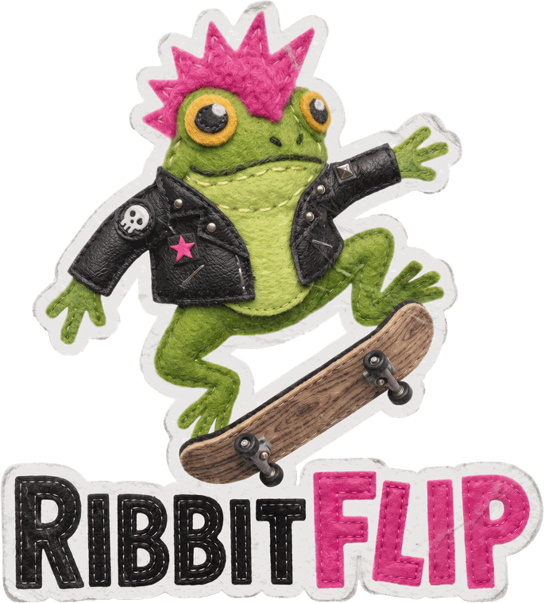
Every module in a short film: the capsule moves, a thread carries the signal, and the thing at the other end reacts at that very moment. You write the rules yourself, such as “when I tilt the capsule right, skip to the next track”.Każdy moduł w krótkim filmie: kapsel robi ruch, nić niesie sygnał, a rzecz po drugiej stronie reaguje w tej samej chwili. Reguły piszesz sam, na przykład „gdy przechylę kapsel w prawo, przełącz na następny utwór”.
All modules and settings in detail ↗Wszystkie moduły i ustawienia ↗
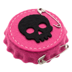
Accessibility: one signal is enoughDostępność: jeden sygnał wystarczyRibbitFlip was also made for people who can't use a standard mouse or keyboard, whether because of a motor disability, an injury or a condition that takes away precision in the hands. The capsule can stay in your hand or be clipped to the peak of a cap or a headband, and then your head drives the cursor. RibbitFlip powstał także dla osób, które nie mogą korzystać ze standardowej myszy i klawiatury: z powodu niepełnosprawności ruchowej, po urazie albo w chorobie, która zabiera precyzję rąk. Kapsel może zostać w dłoni albo trafić na daszek czapki lub opaskę, a wtedy kursor prowadzi ruch głowy.
The screen scanner: a bar sweeps across the screen and you stop it, a second one sweeps the other way, and where they cross, the click lands. The signal can be the capsule's button, a nod, a tilt or going still; none of them needs a press. Skaner ekranu: pasek jedzie przez ekran, zatrzymujesz go, drugi jedzie w poprzek, a na przecięciu pada kliknięcie. Sygnałem może być przycisk kapsla, skinienie, przechył albo znieruchomienie; żaden nie wymaga naciśnięcia.
Hold the cursor still for a moment and the click happens on its own. You set how long and how much the cursor may shake, so a tremor still counts as standing still. Zatrzymujesz kursor na chwilę, a kliknięcie robi się samo. Czas i to, jak bardzo kursor może drgać, ustawiasz pod siebie, więc drżenie ręki nadal liczy się jako bezruch.
Up to sixteen actions in one place, picked with a tilt alone or by stepping through them with clicks. A capsule put down on a blanket or an armrest stops controlling anything. Do szesnastu akcji w jednym miejscu, wybieranych samym pochyleniem albo kolejnymi kliknięciami. Kapsel odłożony na koc czy poręcz fotela przestaje sterować.
It is the same technique as Switch Control on Apple and Switch Access on Android. Wearable head-controlled pointers cost several thousand złoty each; the capsule costs about 70 zł (under 20 dollars) and the app is free, so it is a cheap way to find out whether one-signal control works at all before anyone spends money on specialist equipment. You can also tell the AI assistant in your own words what you cannot do, and it builds the settings around that. To be fair: this is a hobby project, not a medical device, and it needs at least one controlled movement. To ta sama technika, co Switch Control w Apple i Switch Access w Androidzie. Noszone wskaźniki sterowane ruchem głowy kosztują po kilka tysięcy złotych, a kapsel około 70 zł i aplikacja jest darmowa, więc to tani sposób, żeby sprawdzić, czy sterowanie jednym sygnałem w ogóle się sprawdza, zanim ktoś wyda pieniądze na sprzęt specjalistyczny. Możesz też powiedzieć asystentowi AI własnymi słowami, czego nie możesz, a on ułoży ustawienia pod Ciebie. Uczciwie: to projekt hobbystyczny, nie wyrób medyczny, i potrzebny jest choć jeden kontrolowany ruch.
More: RibbitFlip as a helping hand ↗Więcej: RibbitFlip jako pomocna dłoń ↗
Three steps and the capsule does something useful.Trzy kroki i kapsel robi coś pożytecznego.
Download RibbitFlip.exe and run it. The first time, Windows shows a blue window: click “More info”, then “Run anyway”. The panel opens by itself in your browser, and the app starts looking for a capsule straight away: press its middle and hold it close to the computer. Once it is connected, a coloured pill with its name appears in the panel. You add more capsules with the “Add a capsule” button. If the capsule only needs to drive your computer, the lighter RibbitFlip-Essential.exe is enough. Pobierz RibbitFlip.exe i uruchom go. Za pierwszym razem Windows pokaże niebieskie okno: kliknij „Więcej informacji”, a potem „Uruchom mimo to”. Panel otworzy się sam w przeglądarce, a aplikacja od razu zacznie szukać kapsla: naciśnij jego środek i trzymaj go blisko komputera. Po połączeniu w panelu pojawi się kolorowa pigułka z jego nazwą. Kolejne kapsle dodasz przyciskiem „Dodaj kapsel”. Gdy kapsel ma tylko sterować komputerem, wystarczy lżejszy RibbitFlip-Essential.exe.
The simple way: record a movement with the capsule and say what should happen when the app recognizes it. Want it precise? The advanced mode lets you decide exactly what fires and when. And to begin with, you can grab a ready-made setup from the Setups tab: one click and the whole configuration is in place. Najprościej: nagrywasz ruch kapslem i mówisz, co ma się stać, kiedy aplikacja go rozpozna. Chcesz precyzyjnie? Tryb zaawansowany pozwala ustalić dokładnie, co i kiedy się wyzwala. A na początek możesz sięgnąć po gotowy zestaw z zakładki Zestawy: jedno kliknięcie i cała konfiguracja jest na miejscu.
Setting things up switches nothing on by itself: you flip the module's own switch, for example the one at the top of the screen with your rules, Mapping. From that moment the capsule is in control. The main “Armed” switch at the top of the panel is on from the start and stops everything at once, and Alt+R+F switches every module off. Want something different? Open the module and change one rule; the rest stays. Sama konfiguracja jeszcze nic nie włącza: przełącznik modułu przestawiasz samodzielnie, na przykład ten u góry ekranu z regułami, czyli Mapowania. Od tej chwili kapsel steruje. Główny przełącznik „Uzbrojone” na górze panelu jest włączony od startu i zatrzymuje wszystko naraz, a Alt+R+F wyłącza wszystkie moduły. Chcesz inaczej? Wchodzisz w moduł i zmieniasz jedną regułę, reszta zostaje.
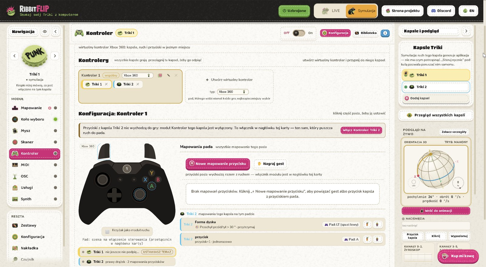
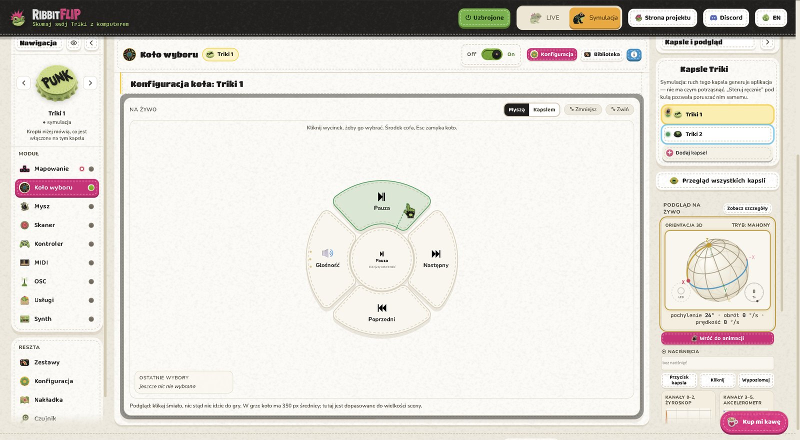
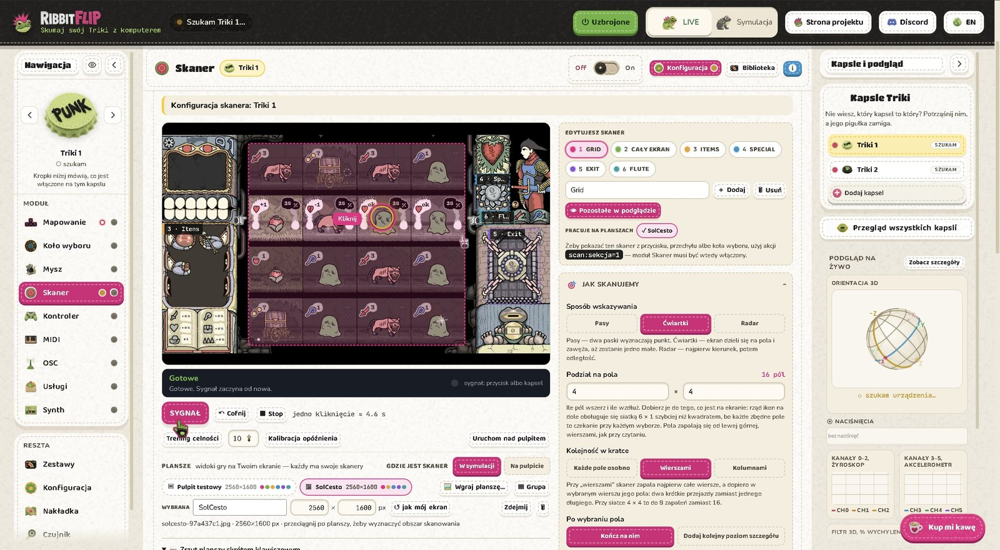
No capsule yet? Switch the panel to simulation (the LIVE / Simulation switch at the top) and look around before you buy anything. The full guide, the SmartScreen window and troubleshooting: Getting started ↗. Nie masz jeszcze kapsla? Przełącz panel na symulację (przełącznik LIVE / Symulacja na górze) i rozejrzyj się, zanim cokolwiek kupisz. Pełna instrukcja, okno SmartScreen i rozwiązywanie problemów: Pierwsze kroki ↗.
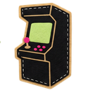
Try it right away: RibbitBeatPrzetestuj od razu: RibbitBeatThe quickest way to see the capsule in action is the rhythm game built into the app. Nothing to set up: open the game, press the capsule's button and sing along with the frogs. Najszybciej zobaczysz kapsel w akcji we wbudowanej grze rytmicznej. Nic nie ustawiasz: otwierasz grę, naciskasz przycisk kapsla i śpiewasz razem z żabami. RibbitBeat is a preview for now: the look and scoring may still change. RibbitBeat jest na razie w wersji testowej: wygląd i punktacja mogą się jeszcze zmienić.
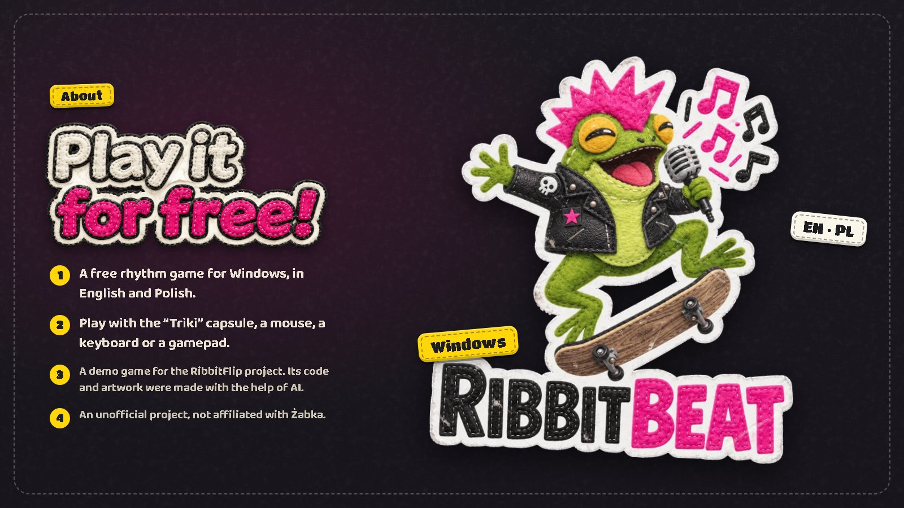
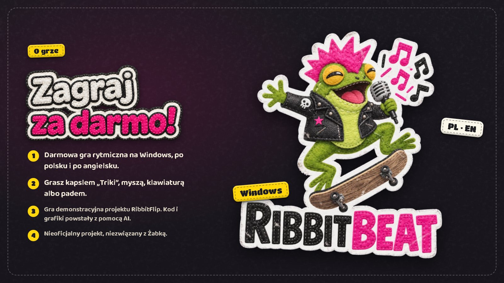
Up to eight players at once, bots included · no capsule needed: mouse, keyboard or gamepad · 19 built-in melodies and your own MIDI files. In the app, the RibbitBeat button in the Try it out group opens the game; RibbitBeat.exe runs just the game, full screen. The full description ↗ Do ośmiu graczy naraz, także z botami · bez kapsla zagrasz myszą, klawiaturą albo padem · 19 wbudowanych melodii i własne pliki MIDI. W aplikacji grę otwiera przycisk RibbitBeat w grupie „Wypróbuj”, a RibbitBeat.exe uruchamia samą grę na pełnym ekranie. Pełny opis gry ↗
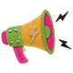
Built something with it? The community is on DiscordMasz coś ciekawego do pokazania? Społeczność siedzi na DiscordzieClips, photos, questions and ready-made setup files: four forums, one per errand. Klipy, zdjęcia, pytania i gotowe pliki zestawów: cztery fora, po jednym na sprawę.
The ones that keep coming back, from the blue Windows box on first launch to whether any of this can break the capsule.Te, które wracają najczęściej: od niebieskiego okna Windowsa przy pierwszym uruchomieniu po to, czy da się tym zepsuć kapsel.
It is not, and that is not an oversight.
RibbitFlip.exe carries no digital signature, so SmartScreen greets it with the blue
“Windows protected your PC” box. To run it anyway: More info → Run anyway.
Nie jest. I nie jest to przeoczenie. RibbitFlip.exe nie ma
podpisu cyfrowego, więc SmartScreen wita go niebieskim oknem „System Windows ochronił Twój
komputer”. Żeby mimo to uruchomić: Więcej informacji → Uruchom mimo to.
A signature is a certificate bought every year for several hundred euros, and a fresh one
would still have to build up reputation with Microsoft first. An unsigned program is not automatically
dangerous, and a signed one is not automatically safe, so here is how to check for yourself: the whole code
is open (MIT) on GitHub,
you can build the same program with one command (pyinstaller RibbitFlip.spec), or run the app
straight from the Python sources.
Podpis to certyfikat kupowany co roku za kilkaset euro, a świeży i tak musiałby najpierw
wyrobić sobie reputację u Microsoftu. Brak podpisu nie znaczy, że program jest niebezpieczny, a podpis nie
znaczy, że jest bezpieczny, więc zamiast prosić o zaufanie: cały kod jest otwarty (MIT) na
GitHubie, taki sam program
zbudujesz jednym poleceniem (pyinstaller RibbitFlip.spec) albo uruchomisz aplikację prosto ze
źródeł w Pythonie.
No, but the alarm makes sense, and two things set it off. The file is packed
by PyInstaller into a single .exe that unpacks itself into a temporary folder at
startup, which is exactly what a share of real malware does. And the program itself, by design,
presses keys, moves the mouse and installs a global keyboard hook. Without that there would be no
control and no emergency stop. From the outside those are the same system calls a keylogger makes;
the difference is what they are for.
Nie, ale alarm jest zrozumiały i składają się na niego dwie rzeczy. Plik jest
spakowany PyInstallerem w jeden .exe, który przy starcie rozpakowuje się do folderu
tymczasowego. Tak samo zachowuje się część prawdziwych szkodników. A sam program z założenia
wciska klawisze, rusza myszą i zakłada globalny hak na klawiaturę; bez tego nie byłoby ani
sterowania, ani stopu awaryjnego. Z zewnątrz to te same wywołania systemowe co u keyloggera,
różnica leży w tym, po co.
What you can do about it: drop the file on VirusTotal and see whether it is one engine or all of them (a lone heuristic detection is usually a false positive), report the false positive to your antivirus, add an exception for the app's folder, or sidestep the whole thing and run from source. Do mention it in #pomoc on Discord as well: it is worth knowing which engine, and since which version. Co możesz z tym zrobić: wrzuć plik na VirusTotal i zobacz, czy to jeden silnik, czy wszystkie (pojedyncze wykrycie heurystyczne to zwykle fałszywy alarm), zgłoś fałszywy alarm swojemu antywirusowi, dodaj wyjątek na folder aplikacji albo omiń temat i uruchom ze źródeł. Napisz też na Discordzie w #pomoc: dobrze wiedzieć, który silnik i od której wersji.
There are no accounts, no telemetry and no update checks, and the panel's
server listens locally only, on 127.0.0.1. The app reaches outside in six situations,
and you trigger all of them yourself: the network services whose addresses you type in; the connection to
OBS Studio; fetching somebody else's setup from a link (only from Discord and GitHub); the Ko-fi page, at
the moment you click the mug; OSC, only to the address you type in; and the RibbitBeat game, when it
downloads MIDI packs or a song from a link you paste.
Nie ma kont, telemetrii ani sprawdzania aktualizacji, a serwer panelu słucha
wyłącznie lokalnie, pod 127.0.0.1. Na zewnątrz aplikacja wychodzi w sześciu sytuacjach
i wszystkie wywołujesz Ty: usługi sieciowe, których adresy wpisujesz; połączenie z OBS Studio; pobranie
cudzego zestawu z odnośnika (tylko z Discorda i GitHuba); strona Ko-fi, w chwili kliknięcia kubka; OSC,
tylko na adres, który wpiszesz; oraz gra RibbitBeat, gdy pobiera paczki MIDI albo piosenkę z wklejonego
adresu.
Worth knowing where the boundary runs: the local server stops the internet and other pages in your browser, but not other programs running on your own Windows account. The diagnostic bundle from “Report a problem” is built from an allowlist, has its keys redacted, and never leaves on its own: you post it. The whole model is written down in SECURITY.md. Warto wiedzieć, gdzie biegnie granica: lokalny serwer zatrzymuje internet i inne strony w przeglądarce, ale nie inne programy działające na Twoim koncie Windows. Paczka diagnostyczna z „Zgłoś problem” powstaje z listy dozwolonych plików, ma zredagowane klucze i nigdy nie wychodzi sama: wysyłasz ją Ty. Cały model opisuje SECURITY.md.
No, and it does not even check whether anything new exists. That is one of the
network trips it deliberately does not make. You take a new version yourself from
Releases,
and what changed in it is in the
changelog.
Settings, setups and profiles live next to the file, in the app's own folder, so you swap the
.exe alone and everything else stays where it was.
Nie, i nawet nie sprawdza, czy jest coś nowego. To jeden z tych ruchów
sieciowych, których świadomie nie robi. Nową wersję pobierasz z zakładki
Releases,
a co się w niej zmieniło, przeczytasz w
changelogu.
Ustawienia, zestawy i profile leżą obok pliku, w folderze aplikacji, więc podmieniasz sam
.exe, a reszta zostaje na miejscu.
No. RibbitFlip only listens to what the capsule broadcasts over Bluetooth LE by itself: motion-sensor readings, button state, battery level and signal strength. It writes nothing back: no firmware flashing, no settings changed, no trace left inside. Close the app and the capsule is exactly what it was. The protocol was reverse-engineered by the community; the credits are in CREDITS.md. Nie. RibbitFlip tylko słucha tego, co kapsel sam rozgłasza po Bluetooth LE: danych z czujnika ruchu, stanu przycisku, poziomu baterii i siły sygnału. Nic do niego nie zapisuje: nie wgrywa firmware'u, nie zmienia ustawień, nie zostawia w środku śladu. Zamykasz aplikację i kapsel jest dokładnie tym, czym był. Protokół odtworzyła społeczność, a podziękowania są w CREDITS.md.
No. The app has a simulation mode, which you turn on with the LIVE / Simulation switch at the top of the panel. The motion is faked and everything else is real: the panel, the modules, the triggers. You can look around before you buy anything. One caveat: simulation is not a safe mode, because the outputs really do fire and really will press a key. That is why in simulation every module starts switched off and the first time you switch one on, the app asks you to confirm. Nie. Aplikacja ma tryb symulacji, który włączasz przełącznikiem LIVE / Symulacja na górze panelu. Ruch jest udawany, a cała reszta prawdziwa: panel, moduły, wyzwalacze. Można się rozejrzeć, zanim cokolwiek kupisz. Jedno zastrzeżenie: symulacja nie jest trybem bezpiecznym, bo wyjścia działają naprawdę i naprawdę wcisną klawisz. Dlatego w symulacji wszystkie moduły startują wyłączone, a pierwsze włączenie potwierdzasz w osobnym okienku.
No. RibbitFlip is a Windows application. Three things keep it there: the
Bluetooth LE stack, the virtual gamepad driver (ViGEmBus) and MIDI going out through the system's
winmm. The panel is an ordinary page in your browser, but the program behind it
has to run on Windows.
Nie. RibbitFlip jest aplikacją windowsową. Trzymają go tam trzy rzeczy: stos
Bluetooth LE, sterownik wirtualnego pada (ViGEmBus) i MIDI wychodzące przez systemowe
winmm. Panel oglądasz w zwykłej przeglądarce, ale sam program musi chodzić
na Windowsie.
For the keyboard, the mouse, OSC, network services and the synth: no, the
.exe has everything inside. Two things you add yourself, both free and only if you want
them: ViGEmBus
for the virtual gamepad (without it the pad module will not start) and
loopMIDI
if MIDI is to reach a music program on the same machine.
Do klawiatury, myszy, OSC, usług sieciowych i syntezatora: nie, .exe
ma wszystko w środku. Dwie rzeczy doinstalowujesz samodzielnie, obie darmowe i tylko wtedy, gdy ich chcesz:
ViGEmBus
dla wirtualnego pada (bez niego moduł pada nie ruszy) oraz
loopMIDI,
jeśli MIDI ma trafić do programu muzycznego na tym samym komputerze.
The honest answer: it depends on the game, and that is the game maker's call, not mine. RibbitFlip does not inject itself into a game and does not read its memory. It sends ordinary keyboard and mouse events, and plugs the pad in through the ViGEmBus driver, the same way adapters and third-party pads do. To the game it looks like ordinary input. Uczciwa odpowiedź brzmi: to zależy od gry, a decyduje o tym jej twórca, nie ja. RibbitFlip nie wstrzykuje się do gry i nie czyta jej pamięci. Wysyła zwykłe zdarzenia klawiatury i myszy, a pada podpina sterownikiem ViGEmBus, tak samo jak robią to adaptery i pady innych firm. Dla gry wygląda to jak zwykłe wejście.
That said, some anti-cheats in online games look askance at synthetic input and at virtual pads alike, and plenty of rulebooks forbid macros outright. If you play something like that, read its rules before you go anywhere near a ranked match. The risk is yours: the app is provided “as is”, without any warranty. Ale część anty-cheatów w grach sieciowych patrzy krzywo i na syntetyczne wejście, i na wirtualne pady, a niejeden regulamin wprost zabrania makr. Jeśli grasz w coś takiego, sprawdź regulamin, zanim wejdziesz na ranking. Ryzyko jest po Twojej stronie: aplikacja jest udostępniana „tak jak jest”, bez jakiejkolwiek gwarancji.
That is what the emergency stop is for: Alt+R+F. It switches off every module on every capsule at once (Mapping, Selection wheel, Mouse, Scanner, Controller, MIDI, OSC, Services and Synth), closes the Scanner's window over the desktop, and it works globally, so you do not have to hit the panel with a runaway cursor. With the modules off, nothing goes out any more. It only switches things off; you turn them back on yourself, with the same switches. The combination itself can be changed in Configuration → Emergency stop. Od tego jest stop awaryjny: Alt+R+F. Wyłącza naraz wszystkie moduły na każdym kapslu (Mapowanie, Koło wyboru, Mysz, Skaner, Kontroler, MIDI, OSC, Usługi i Synth), zamyka okno skanera nad pulpitem i działa globalnie, więc nie musisz trafiać uciekającym kursorem w panel. Z wyłączonymi modułami nic już nie wychodzi. Tylko wyłącza: z powrotem włączasz je tymi samymi przełącznikami. Samą kombinację zmienisz w Konfiguracji → Stop awaryjny.
It can. RibbitFlip has a built-in MCP server on the same local address as the panel. Connect an assistant that speaks it, Claude Code for instance, describe a game's controls in your own words, including what you cannot do, and it reads your setup, checks it against the guide built into the app, does a dry run and saves the Setup. The feature is off until you switch it on, the safe mode is the default, and the server stays on your computer. Details: docs/MCP.md. Może. RibbitFlip ma wbudowany serwer MCP pod tym samym lokalnym adresem, co panel. Podłączasz asystenta, który go rozumie, na przykład Claude Code, opisujesz sterowanie w grze własnymi słowami, także to, czego nie możesz, a on czyta Twoje ustawienia, sprawdza je we wbudowanym przewodniku, robi próbę na sucho i zapisuje zestaw. Funkcja jest wyłączona, dopóki jej nie włączysz, domyślny jest tryb bezpieczny, a serwer działa tylko na Twoim komputerze. Szczegóły: docs/MCP.md.
No. RibbitFlip is independent and has nothing to do with Żabka: it is not endorsed, reviewed or sponsored by them, and the “Triki” name appears here for one purpose only: to say which hardware it works with. You buy the capsule in a shop; the app is made by somebody else entirely. The full disclaimer is at the very bottom of the page, just above the footer. Nie. RibbitFlip jest niezależny i nie ma z Żabką nic wspólnego: nie jest przez nią wspierany, sprawdzany ani sponsorowany, a nazwa „Triki” pada tu wyłącznie po to, żeby wskazać zgodny sprzęt. Kapsel kupujesz w sklepie, aplikację robi ktoś zupełnie inny. Pełne zastrzeżenie jest na samym dole strony, nad stopką.
Nothing, and it stays that way. The code is MIT-licensed, so you can read it, change it and build on it. The only expense is the capsule itself, if you want a physical one. The mug in the corner is Ko-fi: entirely optional, no pressure. The frog hops the same either way. Nic i tak zostanie. Kod jest na licencji MIT, więc możesz go czytać, zmieniać i rozwijać u siebie. Jedyny wydatek to sam kapsel, jeśli chcesz mieć fizyczny. Kubek w rogu to Ko-fi: całkowicie dobrowolne i bez presji, żaba skacze tak samo.
Your question is not here? Have a look at the README (long, but concrete) or simply ask in #pomoc on Discord. It is answered by the same one person who writes all of this. Nie ma tu Twojego pytania? Zajrzyj do README (jest długie, ale konkretne) albo po prostu zapytaj na Discordzie w #pomoc. Odpowiada ta sama jedna osoba, która to wszystko pisze.
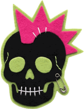
RibbitFlip is an independent, community-made hobby project, inspired by and compatible with the collectible "Triki" motion capsule from Żabka. It is not affiliated with, endorsed by, or sponsored by Żabka; the "Triki" name is used solely to identify compatible hardware. Every other name (of a product, company, game, application, device or service) that appears anywhere on this page or in the app is a trademark or property of its respective owner. Each one is named purely as an example of something RibbitFlip can be used with, and implies no affiliation, endorsement, partnership or recommendation in either direction. The app is provided "as is", without warranty of any kind.
RibbitFlip to niezależny, tworzony hobbystycznie projekt społeczności, zainspirowany kolekcjonerskim kapslem „Triki” z Żabki i z nim zgodny. Projekt nie jest powiązany z Żabką ani przez nią wspierany czy sponsorowany; nazwa „Triki” pojawia się wyłącznie po to, by wskazać zgodny sprzęt. Każda inna nazwa (produktu, firmy, gry, programu, urządzenia czy usługi), która pojawia się gdziekolwiek na tej stronie lub w aplikacji, jest znakiem towarowym lub własnością swojego właściciela. Każda z nich pada tu wyłącznie jako przykład tego, z czym RibbitFlip potrafi współpracować, i nie oznacza żadnego powiązania, wsparcia, współpracy ani rekomendacji w żadną stronę. Aplikacja jest udostępniana „tak jak jest”, bez jakiejkolwiek gwarancji.
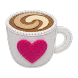
Buy me a coffeeKup mi kawę